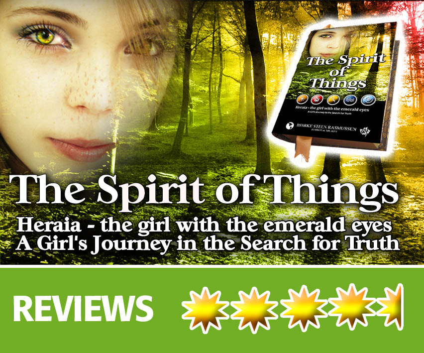
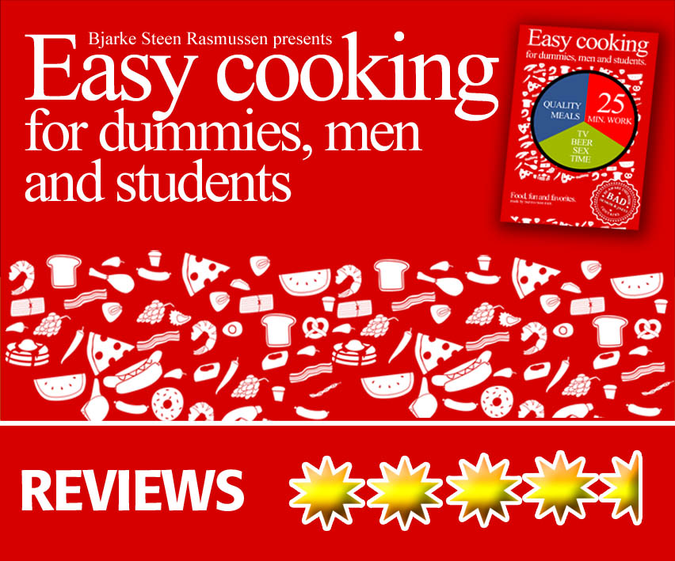

        <div data-role="view" id="book-tabstrip" data-title="The books" data-show="TranslateApp"  style="background-color: #f3f3f3;">
            <div data-role="content" align="center" text-align="center">
                <ul data-role="listview" data-inset="true" data-theme="b">
                    <li>
                        <div align="center">
                            
                        </div>
                        <br>
                        <br>
                        <div id="reviews" data-localize="reviews">
                            Heraia - the girl with the emerald eyes. An exiting story about a Girl's Journey
                            in the Search for Truth. Fantasy, eco thriller..This story is a celebration to the
                            earth, the good people that live here and the magic of life � the Spirit of Things.
                            Everyone who buys this book is also helping the environment since I donate 10% to
                            environmental organisations.<br>
                            <br>
                            REVIEWS:<br>
                            <br>
                            Thought Provoking Read (4/5)<br>
                            A nice book (5/5)<br>
                            A sweet story (4/5)<br>
                            In the spirit of good things (5/5)<br>
                            Everything at one time.. (4/5)<br>
                            A fun read that makes you ponder (5/5)<br>
                            A different one (5/5)<br>
                        </div>
                        <br>
                        <div align="center">
                            
                        </div>
                        <div class="form3-txt">
                            <br>
                            <div>

                            </div>
                            <div id="reviews1" data-localize="reviews1">
                                Easy cooking for dummies, men and students. This book delivers recipes, some quotes
                                and small suggestions during preparation (cooking need to be fun) � most of the
                                recipes is to use on a daily basis. The most of the recipes can be done with 25
                                minutes working time and are all tested on dummies, men, students and also our families
                                � including kids� So we hope it will help, inspire and make cooking enjoyable. even
                                to other men, dummies and students.. <br>
                                <br>
                                �If more of us valued food and cheer and song above hoarded gold, it would be a
                                merrier world.� ? J.R.R. Tolkien
                            </div>
                            <br>
                            <a href="http://www.easycooking.dk">http://www.easycooking.dk/</a><br>
                            <br>
                            <div align="center">
                                <br>
                                <div>
                                    <h2>
                                        BUY A BOOK AND HELP ENVIRONMENT
                                    </h2>
                                </div>
                                <br>
                                
                            </div>

                        </div>
                    </li>
                </ul>
                <br>
                <br>
            </div>        
        </div>    